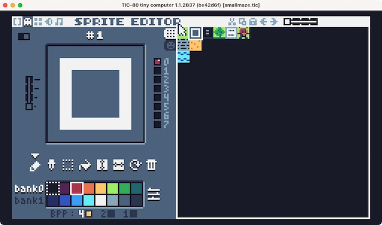

Minimaze: Retrogaming mit der Retrokonsole TIC-80
Die kleinen (Retro-) Game-Engines Pyxel wie auch microStudio machen es dem Programmierer oder der Programmiererin erstaunlich schwer, eine Kollisionserkennung mit Map-Elementen zu realisieren. Ständig muß man zwischen Map- und Sprite-Koordinaten umrechnen. Zwar verstehe ich die Motivation dahinter (man will eine Auflösungsunabhängigkeit erzwingen), aber ich erinnerte mich, daß dies in der Retrokonsole TIC-80 einfacher und ziemlich genial gelöst war.
Also habe ich das Teil angeworfen und in kleines Mini-RPG oder Minimaze realisiert. Schon der (Lua-) Quellcode ist erstaunlich kompakt geraten:
px, py = 2, 3 -- Player x,y position
dir = -1
dir_x = {[0] = 0, 0, -1, 1}
dir_y = {[0] = -1, 1, 0, 0}
function TIC()
cls()
map()
spr(257, 8*px, 8*py, 0) -- Player
if btnp(0) and
fget(mget(px, py - 1), 0) == false then -- UP
dir=0
elseif btnp(1) and
fget(mget(px, py + 1), 0) == false then -- DOWN
dir=1
elseif btnp(2) and
fget(mget(px - 1, py), 0) == false then -- LEFT
dir=2
elseif btnp(3) and
fget(mget(px + 1, py), 0) == false then -- RIGHT
dir=3
end
if dir ~= -1 then
px = px + dir_x[dir]
py = py + dir_y[dir]
end
dir = -1
endDas ganze Geheimnis dieser kompakten Realisierung liegt in dem Zusammenspiel von mget() und fget(): mget(x, y) gibt die ID des Tiles an der Position (x, y) (in Map-Koordinaten) zurück, während fget(id, flag) einen Boolean-Wert (true oder false) in Abhängigkeit davon, ob der Flag gesetzt ist, zurückgibt.

Den Flag setzt man im Sprite Editor im erweiterten Mode (den Schieberegler links oben aktivieren). Je Sprite/Tile können acht verschiedene Flags gesetzt werden. In meinen kleinen Skriptchen habe ich den Flag 0 bei den Tiles und Sprites gesetzt, mit denen der Spieler kollidieren kann. Nur wenn die Abfrage false ergibt, kann der Spieler auf diese Position gesetzt werden.
Natürlich besteht auch hier das Problem, daß der Spieler Sprite-Koordinaten (also »echte« Pixdelkoordinaten) nutzt und die Tiles Map-Koordinaten. Da in TIC-80 die Map-Koordinaten aber entweder je 8x8, 16x16 oder 32x32 Pixel groß sind, kann das (in meinem Spiel sind es 8x8 Pixel) mit einer einzigen Zeile
aufgelöst werden (wobei das Spieler-Sprite in diesem Fall die ID \(257\) besitzt).
Ziemlich genial ist auch der Trick, die möglichen Bewegungsrichtungen für die Horizontale wie für die Vertikale je in einer Tabelle (dem Lua-Äquivalent für Pythons Listen) abzulegen. So kann die nächste Bewegung einfach mit
zugewiesen werden (diesen Trick habe ich beim Potato Imaginator geklaut).
Mit export html <dateiname> wird ein Zip-Archiv dateiname.zip erzeugt, das alle Dateien enthält, die für eine Webversion des Spieles notwendig sind. Entpackt kann man diese zum Beispiel wie hier in seine Seiten einbinden:
Allerdings hat man unter Umständen mit dem Problem gieriger Browser zu kämpfen, die die Pfeiltasten an sich reißen wollen. Mein Chrome-Browser auf dem Mac verhielt sich aber anständig, er betrachtete die von TIC-80 benutzten Tastatureingaben als »konsumiert«.
Das Zip-Archiv als Ganzes läßt sich auch problemlos auf Itch.io hochladen, so daß Ihr dort Eure TIC-80-Spiele der staunenden Öffentlichkeit präsentieren könnt. Testweise habe ich auch diesen Prototypen auf meinem Itch.io-Account veröffentlicht.
Aber es kommt noch besser: Mit export mac <dateiname> wird das Spiel als Mac-Unis-Datei exportiert, die per Doppelklick via Terminal startet. Wenn man an den Dateinamen nach dem Export ein .app anhängt, kann es direkt – ohne Terminal – per Doppelklick gestartet werden. Linux- oder Windows-Exporte sollten analog funktionieren, das konnte ich aber mangels Geräten nicht testen.
Ich hatte ‚Äì nachdem ich sie so lange vernachl√§ssigt hatte ‚Äì jedenfalls mal wieder viel Spa√ü mit der kleinen Retrokonsole und auch schon eine Idee, was ich mit ihr anstellen k√∂nnte: Mein Bitsy-Spiel ¬ªNachts im Park¬´, das ich ja schon einmal nach Pygame portieren wollte, m√º√üte sich doch prima mit TIC-80 realisieren lassen. Denn wie bei Bitsy liegt auch bei der kleinen Fantasy-Konsole in der Beschr√§nkung die Kraft. Und vor Lua habe ich keine Angst. ü§ñ Still digging!